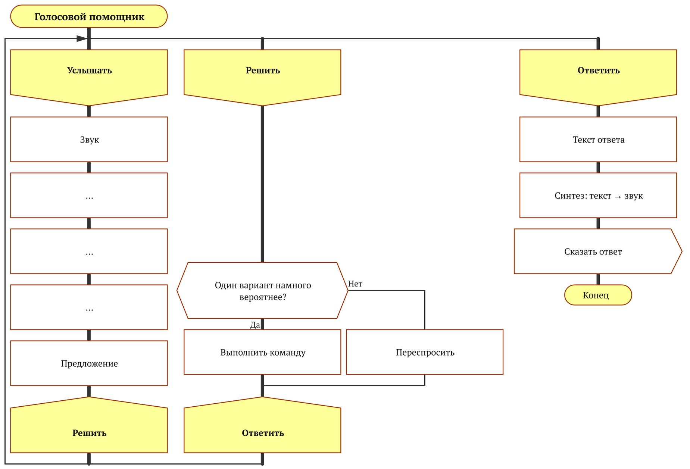

Распознавание и синтез речи · ДРАКОН-лист
Имя ________________ Дата 23.111. ДРАКОН-схема «Голосовой помощник» (силуэт из трёх веток)
Чем ниже — тем позже. Чем правее — тем хуже. Впишите станции 2–4 конвейера.

Ветка — часть силуэта
Икона — блок схемы
Примитив — схема одной линией
Силуэт — схема из веток
2. Мой пример сбоя (с экрана 1)
Сказали:
Распознала модель:
Станция ошибки:
Ветка помощника:
Почему:
3. Знаки в синтезе (с экрана 2)
Моя фраза:
Вывод:
4. ДРАКОН-ГРАФ (жёлтое — запомни)
ДРАКОН и ДРАКОН-ГРАФ — авторская методика и инструментарий Веснина С. Н.